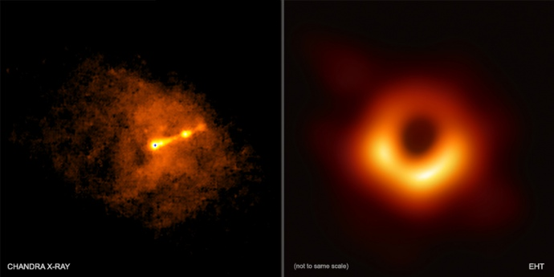

Будь-яке дослідження космічних об'єктів триває роками, а його результати зазвичай зрозумілі лише вченим.
ЕП зібрала досягнення космічної індустрії останніх років і спитала в експертів, чому ці відкриття
важливі.
12 квітня світ відзначає Міжнародний день польоту людини в космос. Що цікавого відбулося в галузі за останні десять років?
Знімок горизонту подій чорної діри
Гравітаційні поля чорних дір настільки сильні, що вони всмоктують всередину все, що туди потрапляє,
включаючи випромінювання, газ і планети.
Чорні діри змінюють геометрію простору і часу. Вони
невидимі, тому що не пропускають світло. Кордон чорної діри називають горизонтом подій.
Міжнародний проект Event Horizon Telescope 10 квітня 2019 року представив перший знімок горизонту подій чорної діри.
Подивитись відео на YouTube
Прес-конференція проходила в сімох країнах одночасно. Радіотелескопи в різних частинах Землі збирали
зображення, які потім об'єднали.
Телескопи досліджували дві надмасивні чорні діри: Стрілець А* та
М87.
Знімок тіні чорної діри допоможе встановити, що відбувається з об'єктами поблизу неї в момент, коли матерія обертається на високих швидкостях.
"Ще понад 100 років тому Ейнштейн в загальній теорії відносності (ЗТВ) передбачив існування чорних дір.
Зараз ми можемо в цьому переконатися.
Розвиток технологій досяг такої точки, коли ми можемо побачити
знімок настільки далекого і складного для відображення об'єкта.
Кілька десятків років тому це здавалося неможливим, але дворічне дослідження показало: горизонт подій
чорних дір повинен являти собою коло,
в центрі якого розташована чорна діра.
Людство змогло зібрати достатньо даних, щоб не тільки отримати фізико-математичну модель такого
грандіозного і масштабного об'єкта,
а й вимірювати його розмір, масу і вплив на зовнішній простір.
Відбулася епохальна подія для світової космічної індустрії", — вважає Андрій Музиченко, продакт-менеджер
українського ком'юніті Space1OOO,
мета якого — сформувати культуру краудфандингу для будівництва
"космічного" архітектурного об'єкта.
Перші дані з телескопів надійшли два роки тому. Про це повідомили Європейська південна обсерваторія і Національний науковий фонд США.
Подивитись відео на YouTubeДослідження Марса за допомогою Curiosity
Наукова лабораторія Марса і марсохід Curiosity — найбільш амбітна місія дослідження Червоної планети. У
2012 році Curiosity сів на Марс, щоб з'ясувати,
чи підходить він для життя. Апарат провів на планеті
2 370 марсіанських діб. За цей час він подолав шлях від кратера Гейла до гори Шарп.
Серед результатів — дані про небезпечний для астронавтів рівень радіації. Також Curiosity з'ясував, що
колись атмосфера на Марсі була більш щільною,
а води було більше. На планеті могло існувати життя:
хімічний склад Марса в давнину дозволяв мікроорганізмам там жити.
11 травня 2016 року. Автопортрет марсохода Curiosity Mars на плато Науклуфт на нижній горі Шарп ФОТО NASA
Відкриття гравітаційних хвиль
Існування гравітаційних хвиль передбачив Ейнштейн у 1916 році. Виявити їх вдалося лише через сто років,
11 лютого 2016 року.
Над виявленням гравітаційних хвиль фізики працювали кілька десятиліть.
Загальна теорія відносності Ейнштейна пропонує розглядати час і простір як одне ціле. Гравітаційні хвилі
— це брижі
на поверхні часу і простору, які спотворюють їх. У 2015 році вперше відбулася пряма
реєстрація хвиль, оголосили вчені обсерваторії LIGO.
"За вирішальний внесок в детектор LIGO і спостереження гравітаційних хвиль" у 2017 році троє американських дослідників отримали Нобелівську премію.
"Відкриття гравітаційних хвиль підтвердило одне з передбачень загальновизнаної теорії гравітації — ЗТГ,
сформульованої Ейнштейном
близько століття тому і використовується, наприклад, для точного
калібрування супутників GPS-навігації та розрахунків траєкторій космічних тіл.
Гравітаційні хвилі виявилися найбільш "потайним" прогнозом ЗТГ. Їх намагалися виявити вчені, у тому числі
українські, ще понад півстоліття тому.
Якби проект не побачив хвиль, ЗТГ довелося б переглядати.
Виявлено вже кілька джерел гравітаційних хвиль. Одне з них, завдяки реєстрації одночасного сплеску
електромагнітного випромінювання,
вдалося ототожнити із злиттям двох нейтронних зірок.
Майбутні проекти дозволять частіше реєструвати події і підвищити точність вимірювань", — говорить
докторант Інституту теоретичної фізики ім.
Боголюбова, кандидат фізико-математичних наук Дмитро
Якубовський.
Враження художника про гравітаційні хвилі, які генеруються двома нейтронними зірками. Американські дослідники заявили, що 11 лютого
2016 року вони виявили гравітаційні хвилі, які фізик Альберт Ейнштейн вперше описав 100 років тому як "брижі в матерії простору-часу" EPA
Виявлення темної енергії
Працюючи над ЗТГ, Ейнштейн сформулював рівняння гравітаційного поля. Вони пояснюють поведінку простору-часу під впливом матерії.
При розрахунках виявлялося, що простір-час повинен стискатися під дією гравітації. Однак в той час
вважалося, що Всесвіт статичний.
Намагаючись навести лад у формулах, Ейнштейн та його співавтор
Гільберт ввели космологічну константу, яка приводила рішення до статичного вигляду.
У більшості випадків космологічна константа була настільки мала, що нею простіше було знехтувати. Однак в
масштабі Всесвіту вона виявлялася важливою
частиною рівняння. Така собі непостійна константа.
У 1931 році Едвін Хаббл з'ясував, що Всесвіт розширюється, і тоді Ейнштейн відмовився від ідеї константи.
Однак у версії Хаббла Всесвіт розширювався з
уповільненням, а в 1998 році фізики спостерігали
розширення з прискоренням.
Вчені сформулювали ідею темної енергії, яка відповідає за прискорення розширення Всесвіту, і в цю концепцію прекрасно вписувалося існування космологічної константи.
У 2013 році завдяки супутнику "Планк" вчені отримали підтвердження, що темна енергія існує. Вона
становить майже три чверті, 68%, усієї маси-енергії Всесвіту.
Близько 27% припадає на темну матерію.
Решта — барионна матерія: зірки, планети, галактики, чорні діри.
Що таке темна енергія, точно не відомо, але вона рівномірно заповнює Всесвіт і відповідає за його
прискорене розширення. Це зміцнило впевненість вчених у тому, що
Всесвіт завжди буде розширюватися,
і чим далі, тим швидше.
Відкриття "червоних гейзерів"
У 2016 році вчені з Університету Токіо з'ясували, чому деякі галактики поводять себе не так, як очікується: в них не утворюються зірки.
Як виявилося, це відбувається через те, що надмасивні чорні діри в центрі галактик викидають конічні
пучки газу — "червоні гейзери". Вони розігрівають газ,
роблячи його занадто гарячим для конденсації.
Цей процес відкрили раніше за гейзери, але механізми його утворення не були зрозумілі.
Існування "червоних гейзерів" допомагає розібратися в механізмах еволюції Всесвіту. У таких галактиках
нові зірки будуть з'являтися тільки після того, як всі інші
галактики згаснуть.
ФОТО SCIENCEFOCUS.COM
Існування води на Марсі
Раніше вважалося, що через кліматичні умови вода на Марсі не може залишатися в рідкому стані. Вперше
сліди води на фотографіях Марса від NASA у 2012
році побачив непальський астроном Лухендро Ойха.
Пізніше рідке озеро під товщею льоду виявили італійські дослідники за допомогою радара Marsis —
приладу на борту орбітального апарата Mars Express
Європейського космічного агентства.
Місія проходила у 2012-2015 роках. Радар встановив яскравість досліджуваного об'єкта, ідентифікувавши
його як воду. Виявлення рідини на Марсі вплинуло на
уявлення про можливу колонізацію Червоної
планети.
"Засновник глобального співтовариства Mars Society Роберт Зубрин стверджує, що до життя у світі, де ми зможемо літати на Марс, вже потрібно готуватися.
Поки ж згадаймо, що навігація за GPS, дослідження міграції або вирубування лісів можливі завдяки
супутникам, вивченню космосу", — зауважує співзасновниця
проекту про науку та інновації Inscience
Олена Скирта.
Космічні дослідження і наукові відкриття часто здаються чимось абстрактним, але вони впливають і на сьогодення, і на майбутнє людства.